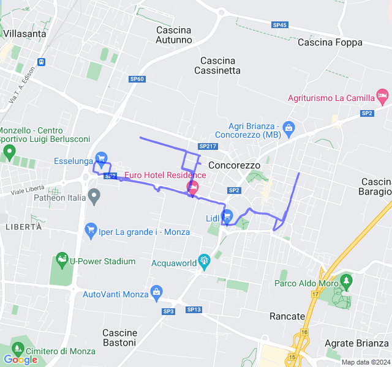
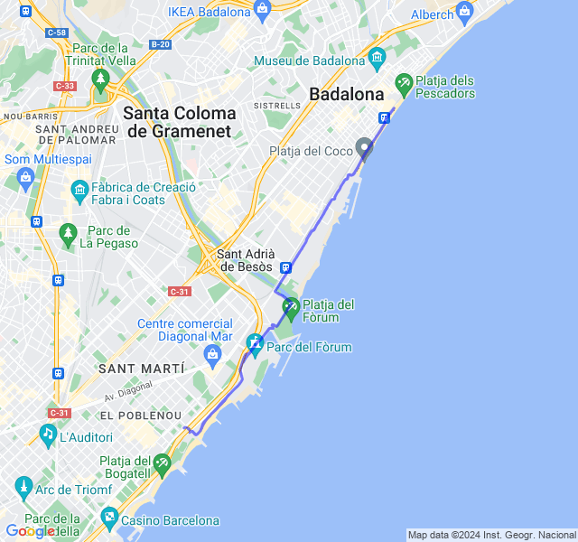
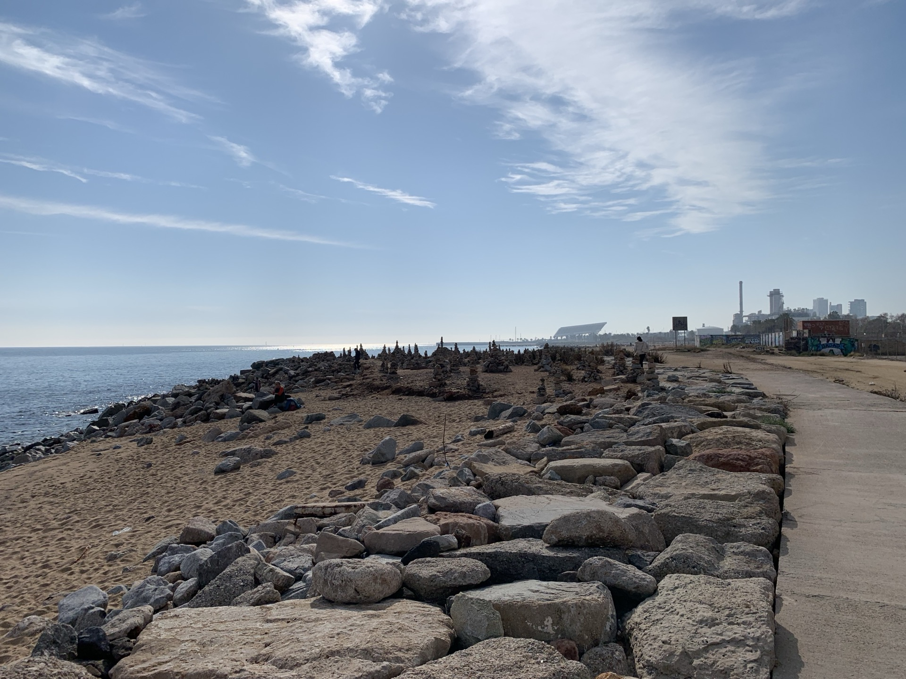
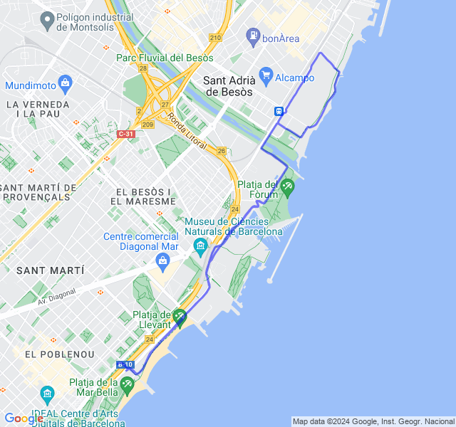
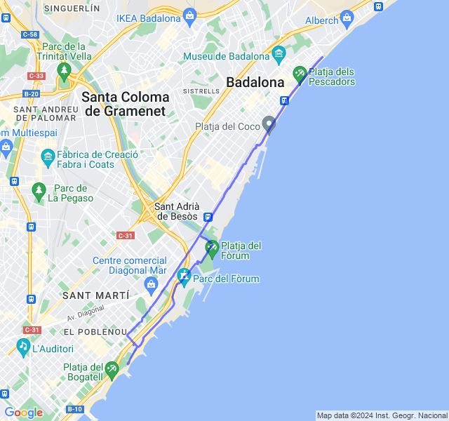

Settimana 5
Settimana di trasferta: inizia la stanchezza che mi porterò dietro per un po'.
Prima uscita
12km Z1. Ho fatto un casino: son uscito convinto di fare i 2x7x300Z5 perchè non avrei fatto in tempo a farli il giorno dopo ma mi sono accorto quasi subito che la zona non mi permetteva di correrli (in sacco di incroci, macchina, buche. Alla fine dopo i primi 6 ho deciso di fare il lento e di rimandare le ripetute. (avevo pure sbagliato a guardare la tabella e i 300Mt erano un'altra settimana... 🤨)

Seconda uscita
2x3x1200Z4 (VDOT 4:05) il rosso della settimana l'ho fatto oggi al posto di ieri (dove non ho fatto niente tra viaggio e impegni). Andato abbastanza bene anche se era un po' cotto dall'aver dormito poco. Ho camminato un po' nel recupero tra le serie. In generale mi pare di essere andato abbastanza bene in Z4 anche con la FC.

Terza uscita
8km Z2. Sono andato un po' lungo visto che ho saltato gli 8/10 di martedì anche se magari li recupero nel weekend.

Fc abbastanza buona ma sensazioni non troppo: stanchezza (non solo nella corsa) e poca facilità a correre.

Quarta uscita
14km Z3 (VDOT 4:20). Finiamo la settimana con un bel medio. Nonostante ancora un po’ di stanchezza residua l’uscita è andata bene: fc ok e passo anche. Fatica sotto controllo per tutto il percorso.
